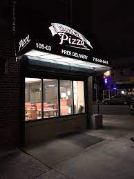
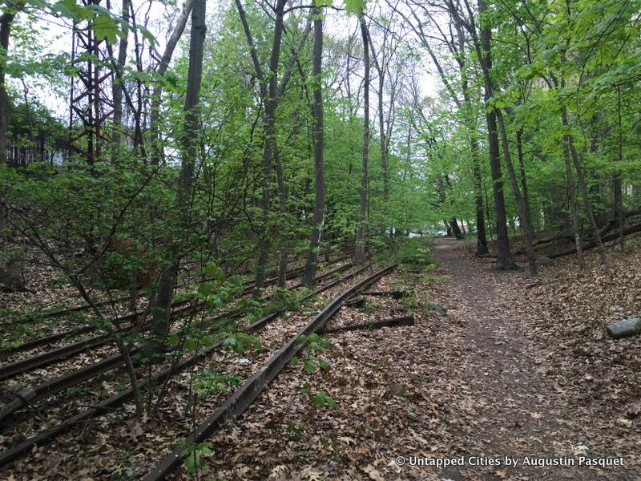

This is a train station that I use twice every day to get to school and back home. I get to meet many of my friends here if we get on different carts.
This is a pizzeria in my neighborhood where I meet up with my friends. I usually order the Buffalo Chicken Pizza.
This is a park in my neighborhood. I used to bike and take field trips there.
